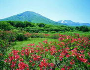
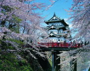

Humans have inhabited the prefecture for at least 15,000 years, and the oldest evidence of pottery in Japan was discovered at the Jōmon period Odai Yamamoto I site. After centuries of rule by the Nanbu and Tsugaru clans, the prefecture was formed out of the northern part of Mutsu Province during the Meiji Restoration. Though the prefecture remains remains dominated by primary sector industries, it also serves as a transportation hub due to its location at the northern end of Honshu. (Source: Wikipedia)
Prefecture Image

Hakkoda Mountains
Fuji of Tsugaru
Hirosaki Castle
